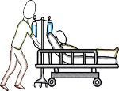

Who?
- All health workers
- Including support staff
- Clinics, hospitals, any setting caring for patients


BCG? Most positive skin tests in people with past BCG vaccine represent actual TB infection. Without symptoms, this is called “latent TB”.
Community acquired infection? Even in areas with a lot of background TB, health workers are at much higher risk (3-7 times higher).
Medication side effects? The benefits of treating latent TB usually outweigh the risk, but there should be a shared decision making process with the employee.